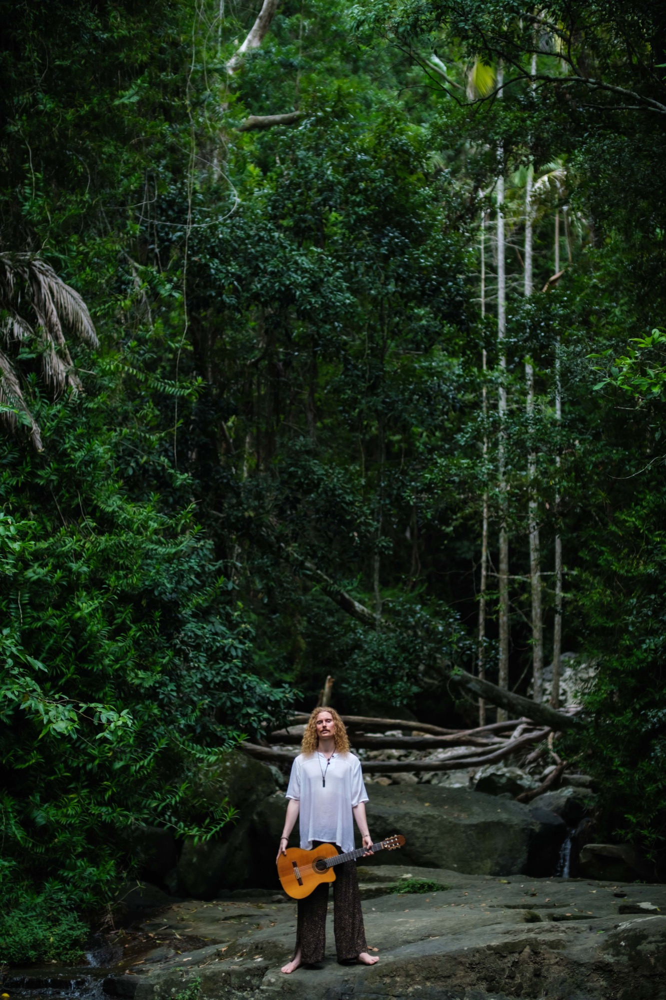

Sun and moon, hand and ear.
Practice, training and a clear ethical frame — the ground everything else stands on, and what I offer to practitioners finding theirs.

Daily practice is the only reason any of the rest of it holds.
A gong can open a room in minutes. What makes that safe is not the instrument but the person holding it — and that person is made slowly, one ordinary morning at a time.
Breath and cold water
Breathwork before anything else, then cold water. It sets the nervous system I bring to everyone I meet that day.
Sitting, and silence
An evening sit, and twice a year a silent retreat with no instruments at all — a long apprenticeship in listening to what a room needs rather than what I planned.
- Insured.
- Supervised.
- No medical claims.
Clear about what sound does and does not do. Sound can support; it does not diagnose or treat. When someone needs more than a sound bath, I say so, and I know who to point them to. Trauma-aware practice shapes how every session is held.
Gong & therapeutic sound
Certified practitioner.
Trauma-aware facilitation
Ongoing study, under supervision.
Silent retreat
Two a year, without instruments.
For practitioners who want a practice that lasts
For sound practitioners, musicians and facilitators who want to hold rooms well — and a livelihood that does not quietly consume them.
- 01Foundation
Listening to a room. Instruments and the body. Scope, and what not to promise.
- 02Practice
Building a daily practice that you will actually keep.
- 03Integration
Holding groups, with feedback on real sessions.
- 04Ongoing
Pricing, boundaries, and the business of the work, over time.
Do I need to already be a practitioner?
No, but you need a practice of some kind, and a reason. Tell me where you are and we’ll see whether this is the right step.
Is this a certification?
No. Mentoring sits alongside formal training rather than replacing it. If you need a certification, I’ll point you to where I trained.
How does it run?
One to one, at a pace that fits your life. We agree the shape together after a first conversation.
What does it cost?
It depends on the shape we agree. Write to me and I’ll be straightforward about it.
Start with a conversation.